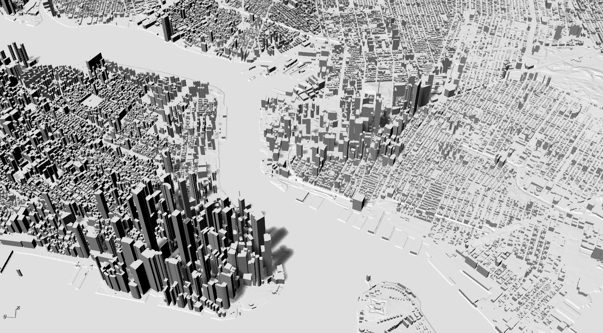

GIS Workshop Site Modeling

Project Description
The objective of this primer is to familiarize rhino users with basic GIS workflow to develop high resolution 3d site model based on publicly available data. This workflow is great for anybody who is looking to create digital and physical site models for analysis or presentation purpose.
GIS (Geographic Information System) is a system that correlates data to spatial locations. GIS systems typically involves 3 major types of data: numerical, bitmap, and vector. Think of numerical data like the census or a spreadsheet, a set of numbers that is indexing the state of a system. Bitmap is like an image, usually a 2-dimensional array of bits. In your typical website picture, images are 8-bit color images, which is composed of 3, a red, a green, and a blue layer of 2-Dimensional arrays containing 8-bit or 2^8 = 256 variations of intensity information. A vector, unlike a mathematical vector, is used in this case as a computer file type which uses a numerical representation for shapes.
The power of GIS is it brings these 3 data types into a single environment allowing you to correlate data and geography in unprecedented ways. It is a great tool for architects and designers to use for research and analysis.
In this workshop, we will go through a common set of issue, which is how to construct a basic site model that has detailed topography with actual building footprint and building height information. We will try to construct a virtual NYC using the digital topography data and building footprint and building height data from the city. By the end of the workshop you would be able to construct something like this.

Step 1
Software Installation
TOOL BREAKDOWN
Rhinoceros 3D | A 3D modeler for the design industry
→ Rhino 3D has a powerful scripting interface that lets you access the core 3D engine with Python, VisualBasic, and C#. We will be relying on that function to convert GIS data to 3D data.
QGIS | Includes a large collection of open source GIS toolkits from an active opensource community
→ A very powerful GIS toolkit we will use to process GIS data. We will use it to convert raw data to feed 3D data to Rhino and to feed 2D graphic data to software like Adobe Photoshop and Illustrator.
Step 2
Finding Spatial Data
Most US governmental agencies make GIS data available to the public. The best way to find data is by asking first what kind of data you want. Data can be found at federal, state, or local agencies. By knowing what type of data you need, it will be easier to track down the agency that has the specific dataset you require.
For our exercise, we will use 2 sets of data, one from USGS’s National Map to find extremely high resolution terrain elevation data called National Elevation Dataset (NED). The one we are looking for has a resolution of 1 image pixel equals to 1 meter x 1 meter in physical dimension. Another dataset we will download from New York City’s Open Data platform, it has all of NYC’s 5 boroughs’ building footprint with building height information.
You can find the raw dataset here:
For your convenience, you can find all the data with the following links.
Step 3
Processing GIS Data
Data Process Objectives
The raw dataset we downloaded need to be process before they can become useful. First, the elevation dataset is made up of 4 tiles that need to be stitch stitched together. Also, most GIS dataset come map projection system that might not be work for you. For example, the National Elevation Dataset is from USGS, a Federal Agency that uses 1 projection system whereas the building footprint, a dataset that comes from the city of New York might use another system. And if you as a designer would like to photoshop images that come from Google Earth or Google Maps, Google uses yet another projection system. So making sure all dataset has a consistent map projection system is one of the major part of our workflow.
QGIS Workflow
To process the image and vector data, we will use an open source software call QGIS. GIS software, in general, process data differently from other image processing or vector processing tools. Because GIS files tend to be very big, it very common to be working with files that are over 2Gb. These type of files will easily crash Photoshop, Illustrator or Rhino. GIS software do not read and cache data into RAM, which allows you to work with huge files efficiently, so it is important for you to understand why it’s necessary to learn GIS if you want to work with real life datasets.
1- Install QGIS and choose Express Desktop Install
2- When installation completes, click on QGIS Desktop under OSGeo4W to open the app.

3- We will first process the NED data. Since we downloaded the NED data as 4 separate tiles, we will need to combine them into 1 file. As the downloaded NED files are zipped, each file should be unzipped into separate folders. Then, we will need to locate the actual data file and put them in the same folder. It may seem redundant at first but once you have tried unzipping the first file, you will find many seemingly random files and it can get messy rather quickly. In any case, the files we are looking for has the file extension of .img and they typically have the largest file size. Cut and paste all the .img files into a separate folder so it looks like this.

Once you have the files in the same folder, follow these steps:
a. In QGIS, click Raster > Miscellaneous > Merge

b. Under Input Files, pick the 4 .img files, and under Output Files, type in a name for the joined file, and choose Geotiff as the file format.

c. Make sure Load into canvas when finished is checked and click OK. You should now have the joined NED data in QGIS. Be aware that this image is about 1.5Gb with about 20000px X 20000px.

4- Next we process the Building Footprint data. It should be obvious that every 2D map is a projection of the spherical earth. In the world of GIS, every agency that produce geospatial data seem to have a different preference for projection systems, mostly due to the various idiosyncrasies of the map projection systems themselves, some systems maintain true distances but distorts area, some provides true north but completely distorts shapes…etc. The consequence of this fact is that we often times find data with different projection systems and we need to adhere to one and convert all the data we use to that same system, this is particularly critical when we export the data out to other platforms like Rhino 3D.
A. First drag and drop the file that has .shp extension to QGIS’ Layer panel, and you should now have the map of all building footprint in the 5 boroughs appear on the main screen on the right.

B. You should note that the street grid is not “square” as the map seem “skewed”. That is due to the projection system used. On the lower right corner of the screen, you should see EPSG:4326, that is the projection system currently being used.

To convert the file’s projection system, right click on the name of the file in the Layer panel, and click Save As , a Save vector layer as… window will pop up. Choose ESRI Shapefile for Format , and give the new file a unique name, in this case, NYC_FP_26918.

Click the globe icon next to CRS. Under Filter type 26918.

Then click on NAD83/UTM zone 18N EPSG:26918 and click OK .

Click OK again to save the layer.
C. Now with both layers referencing 2 different projection systems, we will need to get rid of the EPSG:4326 file. Right click on the layer name and click Remove .

D. QGIS will not automatically set the file to the new coordinate system, so we need to do it manually. Click on the globe icon on the lower right corner. As done previously, type 26918 in Filter and click on NAD83/UTM zone 18N EPSG:26918 , then click OK at the bottom.

The map should now be properly projected and the Manhattan street grid should be squared.
Step 4
Site Selection
Unless you are operating at urban design or landscape scale, you will most likely want to zoom in and define a more specific site boundary. This part of the workshop will focus on cropping the 2 sets of data to show only the area of interest and more importantly, reduce the file size by eliminating unnecessary elements.
1- You QGIS layers should have both the building footprint and NED files loaded, and you Layers Panel should look like this.

Step 5
Data Visualizaiton
Finally we’re ready to visualize the data. As you can see, the table only has 4 columns of data and 2 of which are identical. So essentially, we only have names and salary to work with. So essentially we can do a Box Plot that allow us to look at a 1-Dimensional data in an interesting way.
For this next part we’ll need to bring in some other python packages. Plotly is a dyamic graphing package that lets you interact with data live. We will look at the very basics of how to use it to graph the data we have. So first import the necessary packages by typing in the following.
Step 6
###Data Visualizaiton Challenge Let’s try to apply everything we’ve learn so far and apply it to a more challenging dataset. For this part, you will have to learn a few more Pandas commands on data processing. And for this task, we will use the CUNY_salaryscrape.txt file that was downloaded earlier. Or here’s the link again.
Summary
What You have Learned
- How to create and assign value to a variable
- How to create and assign values a list
- How to create and assign values a list of lists
- How to bring data into Python as text or csv files
- How to create and use a counter
- How to write a basic function
- How to call a basic function
- Basic loop structure - how to use for-loops
- How to import packages in Python
- How to use basic functions of packages like Pandas, Plotly, BeautifulSoup
- How to create interactive plots with Plotly.